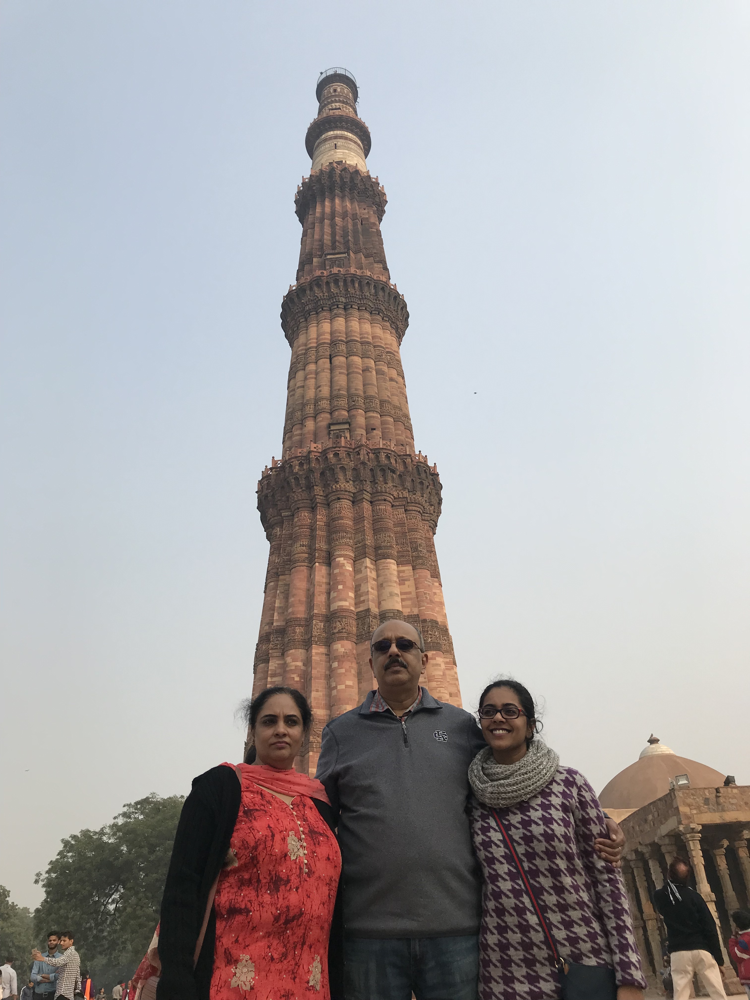
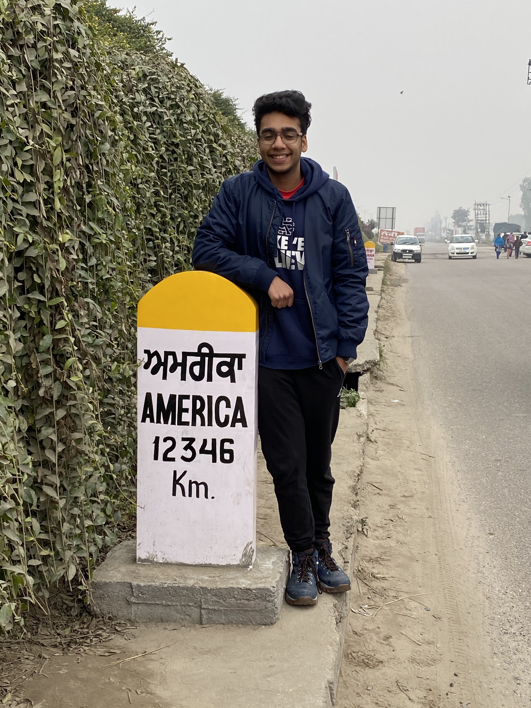

- 
- 
Sahej has been blessed with seeing the world at such an early age. As of today, Sahej is 20 years of age and has been to 11 countries in his lifetime. 6 that he has lived in for more than 2 years at a time. Countries that Sahej has lived in are France, India, Qatar, UAE, Saudi and the US. He has visited countries such as Belgium, Italy, Switzerland, Singapore, Thailand, and multiple US cities. Sahej says that he is very grateful for the opportunity that he has gotten in his lifetime. He has learned so much when comes to others culture and also his own. Even though he was raised in a multicultural environment, he adopted and learned from a mix of values. The middle east is what has had the largest impact on him. For his love for Shawarma, Shish Tawook, Manakesh couldn't have come from any other place. But still, he never lost his own identity as a Sikh from India. He was able to experience all that the world had to offer but also show the world where he had come from.